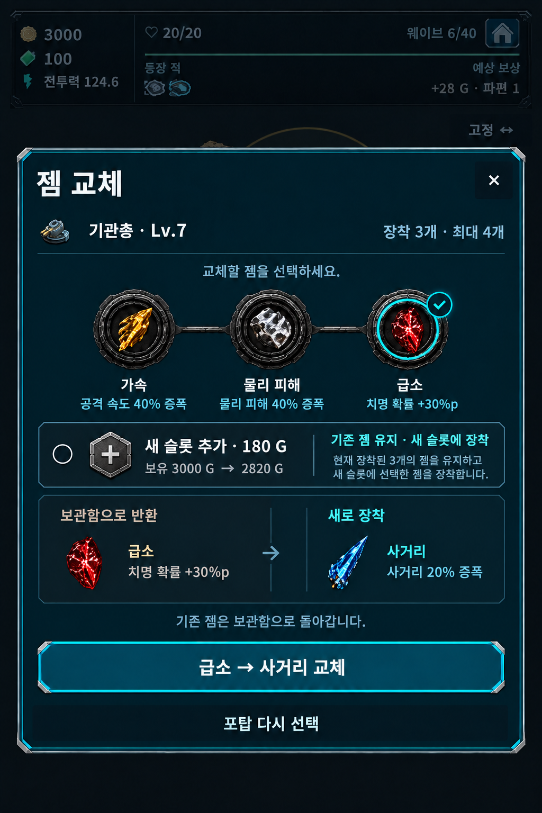
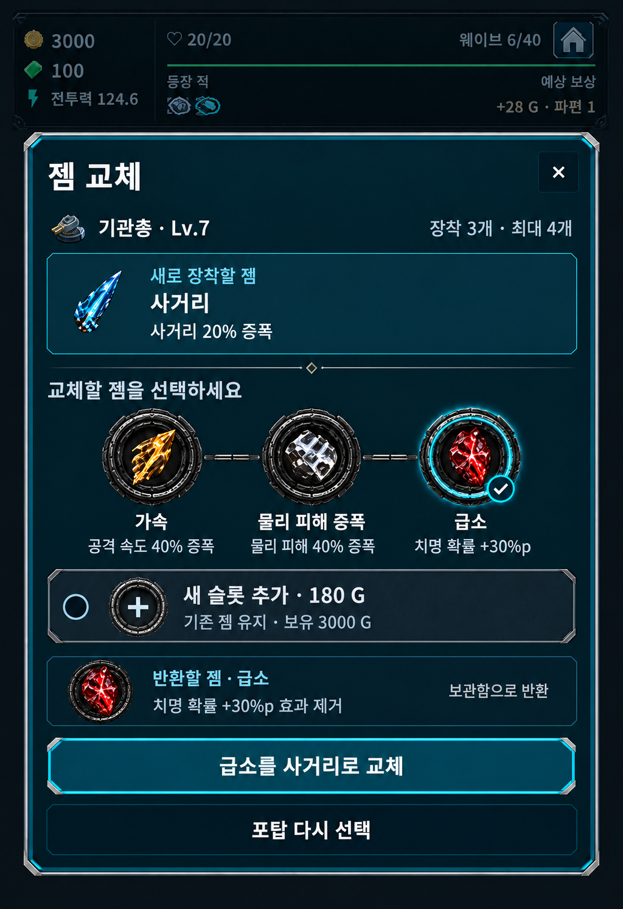
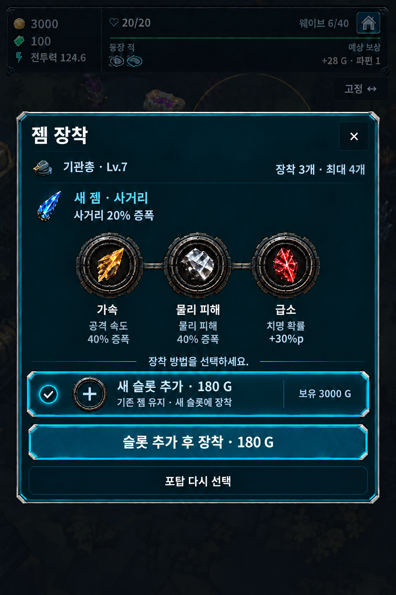
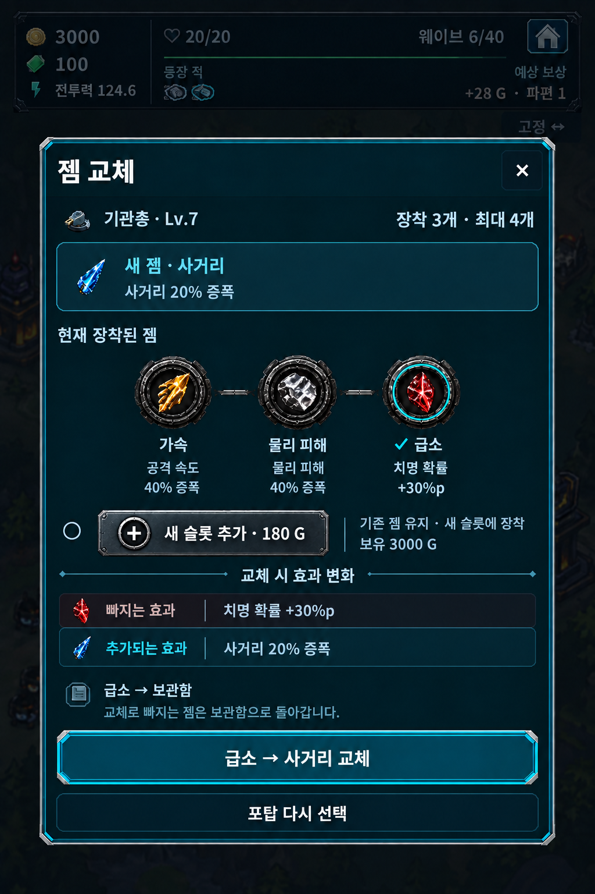

보상 젬 교체 모달 — 4개 제안
현재 코드와 격리된 Godot 렌더에서 기존 젬 효과 비교의 불편함, 선택 시 창 높이·버튼 위치 변화, 최대 슬롯에서도 표시되는 골드, 교체 상황이 불명확한 제목을 확인했습니다.
슬롯 확장 연구 완료, 장착 3개·최대 4개인 포탑입니다. 기존 젬 교체와 180 G로 새 슬롯을 추가하는 선택을 함께 표시합니다. 3번 수정본이 구현 기준으로 승인됐으며, 골드 단위는 공용 골드 아이콘으로 대체합니다. 아래 이미지는 ImageGen 시안이며 게임 적용 화면이 아닙니다.
01 · 비교 중심
반환할 젬과 장착할 젬을 나란히 비교합니다. 교체 대상을 확정 버튼에도 표시합니다.

02 · 새 젬 우선
획득한 젬을 먼저 보여주고, 소켓 선택 아래에 반환할 젬의 효과를 표시합니다.

03 · 승인 시안 · 슬롯 추가 선택
슬롯 추가 선택 바로 아래에 확정 버튼을 둡니다. 중복 설명칸과 연결선을 제거하고 비용·보유 골드·기존 젬 유지 안내는 선택 명패에 남겼습니다.

04 · 효과 변화 중심
빠지는 효과와 추가되는 효과를 정렬된 두 행으로 보여주어 판단을 돕습니다.

승인 3번 실제 Godot 적용 화면
설명칸 제거, 기존 젬 효과 상시 표시, 슬롯 추가 선택과 확정 분리, 비용·보유·확정 금액의 공용 골드 아이콘을 적용했습니다. 아래는 격리 저장으로 실행한 실제 앱·전장 렌더이며 이미지 시안이 아닙니다.
데스크톱 Godot에서 보상 UI·보상 정산·런 명령 회귀를 통과했습니다. 별도 검증 에이전트가 실제 좌표 입력, 구매·반환·취소, 조건 변화, 320/440 배치와 긴 문구를 독립 확인해 최종 통과했습니다. 6개 소켓은 표시용 fixture이며 현재 실제 최대치는 기본 3개·연구 후 4개입니다.
공통 설계 방향: 비교 영역과 하단 버튼 위치 유지, 소켓 선택은 미리보기, 별도 확정으로 교체, 기존 젬은 보관함으로 반환. 정지 시안은 실제 고정 높이·터치·반응형 동작의 검증 근거가 아닙니다.
4개 시안 모두 새 슬롯 추가 선택과 비용·보유 골드를 표시합니다. 예시의 실제 도메인 견적은 180 G이며, 보유 3000 G에서 구매 후 2820 G가 남습니다. 구매와 장착의 원자 처리, 최대 6개 소켓의 3개씩 두 줄 배치, 닫기·포탑 다시 선택의 보상 보존 계약도 유지합니다. 최대 슬롯 도달·레벨 제한·골드 부족 상태는 실제 조건에 따라 구매 선택을 숨기거나 비활성으로 안내해야 합니다.
2026-10-02 · 3번 수정본 승인, 나머지 미선택 제안 · ImageGen 생성 프롬프트 4종 · 3번 설명칸 제거 프롬프트 · 기준: DESIGNS.md 보상 젬 장착·교체